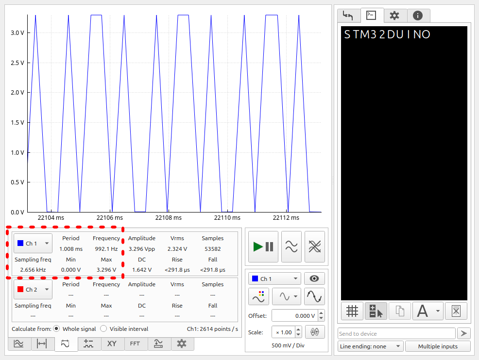
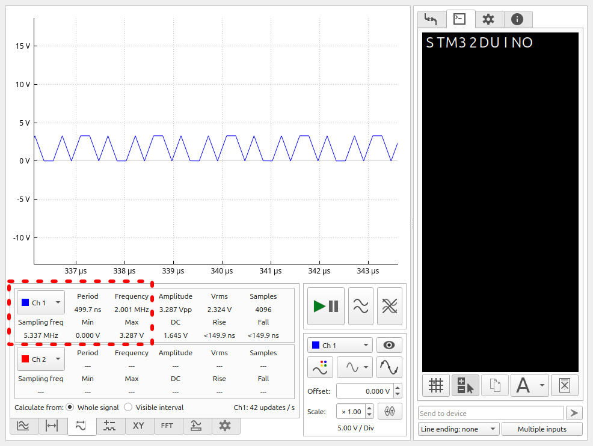

The goal of this example is to create a single channel “oscilloscope”.
This can be achieved with the use of DataPlotter.
We will generate an example signal using a PWM pin, then sample it with
ADC, and send data over Serial to a connected computer running DataPlotter.
The data will then be transformed into a voltage over time plot, which we can
analyze, for ex. using FFT.
D12 will be used as the PWM output, A1 as the ADC input. D12 is connected to A1 directly, and to GND through a 10kOhm resistor.
This can be easily achieved using simple arduino-core code.
int conversion_result = 0;
#define VOLTAGE_REFERENCE 3300 //mV
#define MAX_ANALOG_READ 1024
#define VOLTAGE_COEFFICIENT int(1000*((float)VOLTAGE_REFERENCE/MAX_ANALOG_READ))
unsigned int value = 0;
unsigned int time_since_start = 0;
void setup() {
pinMode(D12, OUTPUT); // initialize D12 as an output.
pinMode(A1, INPUT); // initialize A1 as input
Serial.begin(2000000); // Crank the usart frequency up to increase possible the amount of samples we can send per second
analogWriteFrequency(1000); // PWM freq
analogWrite(D12, 128); // Duty cycle = 128/256 = 50%
Serial.print("$$TSTM32DUINO"); // Intro message
}
void loop() {
conversion_result = analogRead(A1); // Run one-off conversion
value = conversion_result*VOLTAGE_COEFFICIENT; // Convert to millivolt
time_since_start = micros();
Serial.write("$$Puu4", 6);
Serial.write((unsigned char *)&time_since_start, 4);
Serial.write("uu4", 3);
Serial.write(((unsigned char*)&value), 4);
Serial.write(";", 1);
}

Sampling Freq: 2.66KHz (According to DataPlotter)
PWM frequency can be accurately measured up to ~1.3KHz using FFT in DataPlotter
analogRead initiates a one-off conversion every time we call to it.
This is rather slow, but the resulting data is nonetheless sufficient
for plotting low-frequency signals.
In order to increase sampling speed, we will need to optimize the sampling functions of our code.
By adding a build_opt.h file to the sketch folder, we can customize build options for the arduino core.
In this case, we will disable arduino’s ADC module completely, as we do not need the options
it provides.
-DHAL_ADC_MODULE_ONLY
We will set up the ADC to continuously sample CH1. We can then read the ADC data register at any time to
get the last sampled value.
We will also set up the RCC to provide the highest possible core clock of 64mHz.
These init functions can be generated using CubeMX.
ADC_HandleTypeDef hadc1;
void SystemClock_Config(void) // This function is declared WEAK in the stm32duino code,
// we can redefine it here and it will be used instead in init.
{
RCC_OscInitTypeDef RCC_OscInitStruct = {0};
RCC_ClkInitTypeDef RCC_ClkInitStruct = {0};
/** Configure the main internal regulator output voltage
*/
HAL_PWREx_ControlVoltageScaling(PWR_REGULATOR_VOLTAGE_SCALE1);
/** Initializes the RCC Oscillators according to the specified parameters
* in the RCC_OscInitTypeDef structure.
*/
RCC_OscInitStruct.OscillatorType = RCC_OSCILLATORTYPE_HSI;
RCC_OscInitStruct.HSIState = RCC_HSI_ON;
RCC_OscInitStruct.HSIDiv = RCC_HSI_DIV1;
RCC_OscInitStruct.HSICalibrationValue = RCC_HSICALIBRATION_DEFAULT;
RCC_OscInitStruct.PLL.PLLState = RCC_PLL_ON;
RCC_OscInitStruct.PLL.PLLSource = RCC_PLLSOURCE_HSI;
RCC_OscInitStruct.PLL.PLLM = RCC_PLLM_DIV1;
RCC_OscInitStruct.PLL.PLLN = 8;
RCC_OscInitStruct.PLL.PLLP = RCC_PLLP_DIV2;
RCC_OscInitStruct.PLL.PLLQ = RCC_PLLQ_DIV2;
RCC_OscInitStruct.PLL.PLLR = RCC_PLLR_DIV2;
if (HAL_RCC_OscConfig(&RCC_OscInitStruct) != HAL_OK)
{
Error_Handler();
}
/** Initializes the CPU, AHB and APB buses clocks
*/
RCC_ClkInitStruct.ClockType = RCC_CLOCKTYPE_HCLK|RCC_CLOCKTYPE_SYSCLK
|RCC_CLOCKTYPE_PCLK1;
RCC_ClkInitStruct.SYSCLKSource = RCC_SYSCLKSOURCE_PLLCLK;
RCC_ClkInitStruct.AHBCLKDivider = RCC_SYSCLK_DIV1;
RCC_ClkInitStruct.APB1CLKDivider = RCC_HCLK_DIV1;
if (HAL_RCC_ClockConfig(&RCC_ClkInitStruct, FLASH_LATENCY_2) != HAL_OK)
{
Error_Handler();
}
}
extern "C" void HAL_ADC_MspInit(ADC_HandleTypeDef* hadc) // This function is called from within
// MX_ADC1_Init
{
GPIO_InitTypeDef GPIO_InitStruct = {0};
if(hadc->Instance==ADC1)
{
/* Peripheral clock enable */
__HAL_RCC_ADC_CLK_ENABLE();
__HAL_RCC_GPIOA_CLK_ENABLE();
/**ADC1 GPIO Configuration
PA1 ------> ADC1_IN1
*/
GPIO_InitStruct.Pin = GPIO_PIN_1;
GPIO_InitStruct.Mode = GPIO_MODE_ANALOG;
GPIO_InitStruct.Pull = GPIO_NOPULL;
HAL_GPIO_Init(GPIOA, &GPIO_InitStruct);
}
}
/**
* @brief ADC1 Initialization Function
* @param None
* @retval None
*/
static void MX_ADC1_Init(void)
{
ADC_ChannelConfTypeDef sConfig = {0};
/** Configure the global features of the ADC (Clock, Resolution, Data Alignment and number of conversion)
*/
hadc1.Instance = ADC1;
hadc1.Init.ClockPrescaler = ADC_CLOCK_SYNC_PCLK_DIV2;
hadc1.Init.Resolution = ADC_RESOLUTION_12B;
hadc1.Init.DataAlign = ADC_DATAALIGN_RIGHT;
hadc1.Init.ScanConvMode = ADC_SCAN_DISABLE;
hadc1.Init.EOCSelection = ADC_EOC_SINGLE_CONV;
hadc1.Init.LowPowerAutoWait = DISABLE;
hadc1.Init.LowPowerAutoPowerOff = DISABLE;
hadc1.Init.ContinuousConvMode = ENABLE;
hadc1.Init.NbrOfConversion = 1;
hadc1.Init.ExternalTrigConv = ADC_SOFTWARE_START;
hadc1.Init.ExternalTrigConvEdge = ADC_EXTERNALTRIGCONVEDGE_NONE;
hadc1.Init.DMAContinuousRequests = ENABLE;
hadc1.Init.Overrun = ADC_OVR_DATA_PRESERVED;
hadc1.Init.SamplingTimeCommon1 = ADC_SAMPLETIME_1CYCLE_5; // Highest possible sampling speed
hadc1.Init.SamplingTimeCommon2 = ADC_SAMPLETIME_1CYCLE_5; // Ensures data is updated on every main loop
hadc1.Init.OversamplingMode = DISABLE;
hadc1.Init.TriggerFrequencyMode = ADC_TRIGGER_FREQ_HIGH;
if (HAL_ADC_Init(&hadc1) != HAL_OK)
{
Error_Handler();
}
/** Configure Regular Channel
*/
sConfig.Channel = ADC_CHANNEL_1;
sConfig.Rank = ADC_REGULAR_RANK_1;
sConfig.SamplingTime = ADC_SAMPLINGTIME_COMMON_1;
if (HAL_ADC_ConfigChannel(&hadc1, &sConfig) != HAL_OK)
{
Error_Handler();
}
}
#define VOLTAGE_REFERENCE 3300
#define MAX_ANALOG_READ 4096
#define VOLTAGE_COEFFICIENT (int)(1000*((float)VOLTAGE_REFERENCE/MAX_ANALOG_READ))
unsigned int time_since_start = 0;
unsigned int value = 0;
void setup() {
pinMode (D12, OUTPUT); // initialize D12 (PB_4) as an output.
// ADC pin initialization happens in init code.
analogWriteFrequency(1000); // PWM freq
analogWrite(D12, 128); // Duty cycle = 128/256 = 50%
MX_ADC1_Init(); // Initialize ADC1
/* Run the ADC calibration */
if (HAL_ADCEx_Calibration_Start(&hadc1) != HAL_OK) {
/* Calibration Error */
Error_Handler();
}
Serial.begin(2000000);
Serial.print("$$TSTM32DUINO"); // Intro message
HAL_ADC_Start(&hadc1); // Start contiunous sampling
}
void loop() {
value = HAL_ADC_GetValue(&hadc1)*VOLTAGE_COEFFICIENT;
time_since_start = micros();
Serial.write("$$Puu4", 6);
Serial.write((unsigned char *)&time_since_start, 4);
Serial.write("uu4", 3);
Serial.write(((unsigned char*)&value), 4);
Serial.write(";", 1);
}
Sampling Freq: 7.5KHz (~2.8 times increase from basic arduino code)
PWM frequency can be accurately measured up to ~3KHz using FFT in DataPlotter
Letting the ADC peripheral sample in the background while the core is doing communications allows for far greater throughput.
So far, we have been sending data points one-by-one to the plotter. This is inefficient, as besides the data point, we have to send the time at which the point was measured, as well as a lot of formatting bytes. Additionally, while we are sending the collected data, ADC continues collecting in the background, so we are not sending every sample collected.
The ADC is currently configured to sample every 1.5 clock cycles, which is further divided by 2 by the clock prescaler. It is not feasable to send the data point-by-point in the 3 cycle window.
We can remedy this by collecting the ADC data in a buffer, and then sending that complete buffer to DataPlotter. DataPlotter provides a function for us to import a whole channel with data - $$C.
Unfortunately, the data that we send will not be appended to the data sent previously, as with the point-by-point mode. However, we can capture a (relatively) high-frequency sample window, and display that. This can be used, to plot a short, but high resolution graph.
We will set up Direct Memory Access from the ADC to a buffer array. Each time ADC completes a conversion, the data register will be copied over by DMA to the array, and the memory address of the destination will be incremented by the data-width of the sample.
The DMA will operate in circular mode once it is set up. When the buffer is full, the DMA will generate an interrupt, which will allow us to disable further DMA transfer, write the buffer data over serial, and re-enable transfer again. According to the application needs, this can instead be setup to instead only fill up the buffer for ex. when an external event is triggered, such as a button press or a signal on ADC.
The G031K8 provides us with a rather limited 8k of RAM. In order to maximize the size of the buffer, we can drop the ADC sampling resolution down to 8 bits, meaning that each sample is contained within a byte of memory. It’s possible to handle a buffer of 4k without overflowing the RAM. This can be marginally increased by further stripping down arduino code, but this is outside the scope of this example and the increase wouldn’t be large either.
The code is mostly the same, except that we will also change the prescaler for the ADC to 1 maximize the sampling speed. A speed change of 1.5 to 3.5 cycles is also required for the channel, as on 1.5 it seems that the data is actually generated faster than it can be sent, and serial communication never completes. This can be remedied by writing our own u(s)art code, but this is outside the scope of this example.
-DHAL_ADC_MODULE_ONLY
DMA_HandleTypeDef hdma_adc1;
ADC_HandleTypeDef hadc1;
void SystemClock_Config(void) // This function is declared WEAK in the stm32duino code,
// we can redefine it here and it will be used instead in init.
{
RCC_OscInitTypeDef RCC_OscInitStruct = {0};
RCC_ClkInitTypeDef RCC_ClkInitStruct = {0};
/** Configure the main internal regulator output voltage
*/
HAL_PWREx_ControlVoltageScaling(PWR_REGULATOR_VOLTAGE_SCALE1);
/** Initializes the RCC Oscillators according to the specified parameters
* in the RCC_OscInitTypeDef structure.
*/
RCC_OscInitStruct.OscillatorType = RCC_OSCILLATORTYPE_HSI;
RCC_OscInitStruct.HSIState = RCC_HSI_ON;
RCC_OscInitStruct.HSIDiv = RCC_HSI_DIV1;
RCC_OscInitStruct.HSICalibrationValue = RCC_HSICALIBRATION_DEFAULT;
RCC_OscInitStruct.PLL.PLLState = RCC_PLL_ON;
RCC_OscInitStruct.PLL.PLLSource = RCC_PLLSOURCE_HSI;
RCC_OscInitStruct.PLL.PLLM = RCC_PLLM_DIV1;
RCC_OscInitStruct.PLL.PLLN = 8;
RCC_OscInitStruct.PLL.PLLP = RCC_PLLP_DIV2;
RCC_OscInitStruct.PLL.PLLQ = RCC_PLLQ_DIV2;
RCC_OscInitStruct.PLL.PLLR = RCC_PLLR_DIV2;
if (HAL_RCC_OscConfig(&RCC_OscInitStruct) != HAL_OK)
{
Error_Handler();
}
/** Initializes the CPU, AHB and APB buses clocks
*/
RCC_ClkInitStruct.ClockType = RCC_CLOCKTYPE_HCLK|RCC_CLOCKTYPE_SYSCLK
|RCC_CLOCKTYPE_PCLK1;
RCC_ClkInitStruct.SYSCLKSource = RCC_SYSCLKSOURCE_PLLCLK;
RCC_ClkInitStruct.AHBCLKDivider = RCC_SYSCLK_DIV1;
RCC_ClkInitStruct.APB1CLKDivider = RCC_HCLK_DIV1;
if (HAL_RCC_ClockConfig(&RCC_ClkInitStruct, FLASH_LATENCY_2) != HAL_OK)
{
Error_Handler();
}
}
extern "C" void HAL_ADC_MspInit(ADC_HandleTypeDef* hadc) // This function is called from within
// MX_ADC1_Init
{
GPIO_InitTypeDef GPIO_InitStruct = {0};
if(hadc->Instance==ADC1)
{
/* Peripheral clock enable */
__HAL_RCC_ADC_CLK_ENABLE();
__HAL_RCC_GPIOA_CLK_ENABLE();
/**ADC1 GPIO Configuration
PA1 ------> ADC1_IN1
*/
GPIO_InitStruct.Pin = GPIO_PIN_1;
GPIO_InitStruct.Mode = GPIO_MODE_ANALOG;
GPIO_InitStruct.Pull = GPIO_NOPULL;
HAL_GPIO_Init(GPIOA, &GPIO_InitStruct);
/* ADC1 DMA Init */
hdma_adc1.Instance = DMA1_Channel1;
hdma_adc1.Init.Request = DMA_REQUEST_ADC1;
hdma_adc1.Init.Direction = DMA_PERIPH_TO_MEMORY;
hdma_adc1.Init.PeriphInc = DMA_PINC_DISABLE;
hdma_adc1.Init.MemInc = DMA_MINC_ENABLE;
hdma_adc1.Init.PeriphDataAlignment = DMA_PDATAALIGN_BYTE;
hdma_adc1.Init.MemDataAlignment = DMA_MDATAALIGN_BYTE;
hdma_adc1.Init.Mode = DMA_CIRCULAR;
hdma_adc1.Init.Priority = DMA_PRIORITY_LOW;
if (HAL_DMA_Init(&hdma_adc1) != HAL_OK)
{
Error_Handler();
}
__HAL_LINKDMA(hadc,DMA_Handle,hdma_adc1);
}
}
/**
* @brief ADC1 Initialization Function
* @param None
* @retval None
*/
static void MX_ADC1_Init(void)
{
ADC_ChannelConfTypeDef sConfig = {0};
/** Configure the global features of the ADC (Clock, Resolution, Data Alignment and number of conversion)
*/
hadc1.Instance = ADC1;
hadc1.Init.ClockPrescaler = ADC_CLOCK_SYNC_PCLK_DIV1;
hadc1.Init.Resolution = ADC_RESOLUTION_8B;
hadc1.Init.DataAlign = ADC_DATAALIGN_RIGHT;
hadc1.Init.ScanConvMode = ADC_SCAN_DISABLE;
hadc1.Init.EOCSelection = ADC_EOC_SINGLE_CONV;
hadc1.Init.LowPowerAutoWait = DISABLE;
hadc1.Init.LowPowerAutoPowerOff = DISABLE;
hadc1.Init.ContinuousConvMode = ENABLE;
hadc1.Init.NbrOfConversion = 1;
hadc1.Init.ExternalTrigConv = ADC_SOFTWARE_START;
hadc1.Init.ExternalTrigConvEdge = ADC_EXTERNALTRIGCONVEDGE_NONE;
hadc1.Init.DMAContinuousRequests = ENABLE;
hadc1.Init.Overrun = ADC_OVR_DATA_PRESERVED;
hadc1.Init.SamplingTimeCommon1 = ADC_SAMPLETIME_3CYCLES_5;
hadc1.Init.SamplingTimeCommon2 = ADC_SAMPLETIME_1CYCLE_5;
hadc1.Init.OversamplingMode = DISABLE;
hadc1.Init.TriggerFrequencyMode = ADC_TRIGGER_FREQ_HIGH;
if (HAL_ADC_Init(&hadc1) != HAL_OK)
{
Error_Handler();
}
/** Configure Regular Channel
*/
sConfig.Channel = ADC_CHANNEL_1;
sConfig.Rank = ADC_REGULAR_RANK_1;
sConfig.SamplingTime = ADC_SAMPLINGTIME_COMMON_1;
if (HAL_ADC_ConfigChannel(&hadc1, &sConfig) != HAL_OK)
{
Error_Handler();
}
}
/**
* Enable DMA controller clock
*/
static void MX_DMA_Init(void)
{
/* DMA controller clock enable */
__HAL_RCC_DMA1_CLK_ENABLE();
/* DMA interrupt init */
/* DMA1_Channel1_IRQn interrupt configuration */
HAL_NVIC_SetPriority(DMA1_Channel1_IRQn, 3, 0);
HAL_NVIC_EnableIRQ(DMA1_Channel1_IRQn);
}
#define MEASUREMENT_INCREMENT "pU4\x00\x02\xdb\xF0"
/*
* We can measure this in reverse:
* we know the PWM frequency (A) of the example signal,
* we can set this to any value (X) at first and run the code
* DataPlotter gives us a measured frequency (B) of the signal
* then the correct increment Y is equal X*(B/A)
*
* We convert Y to HEX and write it here in a string literal.
* After running the code again, the correct PWM frequency is
* measured by DataPlotter.
*/
#define BUFFER_LENGTH (1024*4)
uint32_t adc_val[BUFFER_LENGTH/4];
/*
* The HAL function for starting DMA only accepts uint32_t array pointers.
* Despite this being a uint32_t array, the way the DMA is set up
* will actually fill it up with uint8_t.
* we will then cast it to char in the serial communication
* and write it as a normal uint8_t array.
* The length has to be divided by (32/8) = 4
*/
#define DP_STR "$$C1," MEASUREMENT_INCREMENT ",4096,8,3.3;u1"
// The string to send before the channel data
// In DataPlotter protocol:
// Channel 1, In time increments of X, 4096 Samples, of 2^8 maximum value, which is remapped to 3.3V;
extern "C" void DMA1_Channel1_IRQHandler(void) // This function will get called every time the DMA CH1 generates an interrupt:
// HAL sets it up to generate Half Transfer and Full Transfer complete interrupts.
// It will be called when the buffer is (half) full.
{
if(DMA1->ISR & DMA_ISR_HTIF1){ // Handle Half Transfer interrupt without sending data.
// We could disable the Half Transfer interrupt completely
// But that would require writing our own IRQHandler
// (beyond the scope of this excercise)
HAL_DMA_IRQHandler(&hdma_adc1); // Handle interrupt
}
else{ // Handle Full Transfer interrupt
HAL_ADC_Stop_DMA(&hadc1); // Stop DMA to prevent overwriting the buffer during communication
HAL_DMA_IRQHandler(&hdma_adc1); // Handle interrupt
Serial.write(DP_STR, sizeof(DP_STR)-1);
Serial.write((unsigned char*)adc_val, BUFFER_LENGTH);
Serial.write(";",1);
HAL_ADC_Start_DMA(&hadc1, adc_val, BUFFER_LENGTH); // Restart sampling & DMA
}
}
void setup() {
pinMode (D12, OUTPUT); // initialize D12 (PB_4) as an output.
// ADC pin initialization happens in init code.
analogWriteFrequency(2000000); // PWM freq
analogWrite(D12, 128); // Duty cycle = 128/256 = 50%
MX_DMA_Init(); // Initialize DMA & ADC1
MX_ADC1_Init();
/* Run the ADC calibration */
if (HAL_ADCEx_Calibration_Start(&hadc1) != HAL_OK) {
/* Calibration Error */
Error_Handler();
}
Serial.begin(2000000);
Serial.print("$$TSTM32DUINO"); // Intro message
HAL_ADC_Start_DMA(&hadc1, adc_val, BUFFER_LENGTH); // Start continuous sampling and DMA to the adc_val buffer
}
void loop() {
; // No code is needed in loop as communication happens during interrupt
}

Sampling Freq: 5.337MHz (~702 times increase from the advanced code, ~2052 times increase from the arduino code)
PWM frequency can be accurately measured up to ~2.5MHz using FFT in DataPlotter
Saving the sampled data continously to a buffer without interrupting it every conversion or without waiting for the data to be sent point-by-point yields a massive increase in sampling speed.
Accessing the HAL directly instead of using bulky arduino-core code leads to great performance gains. etc. etc.